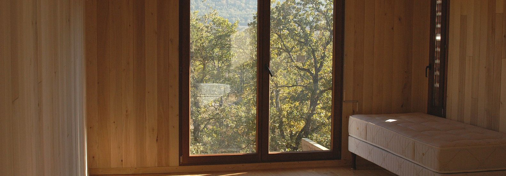
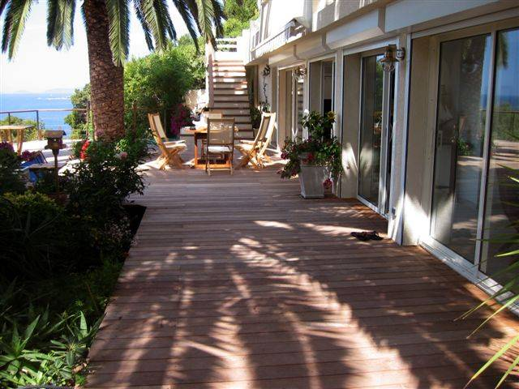
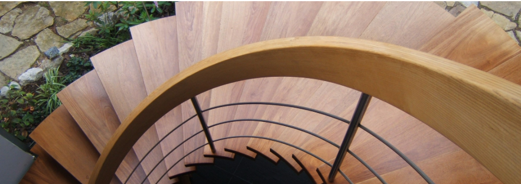

-
Aménagement intérieur par des artisans menuisiers à Marseille
MonBeauMeuble crée des aménagements intérieurs haut de gamme depuis plus de 20 ans pour le particulier Depuis plus de 20 ans notre menuiserie vient chez vous, prend des mesures, fait les plans, vous propose un projet au plus proche de vos désirs, puis fabrique pièce après pièce chaque élément de vos aménagements et vient ensuite les installer à votre domicile. Votre bureau, votre entourage de cheminée, votre bibliothèque,... peuvent être fabriqués dans notre atelier de Marseille. Laissez-nous également vous installer des placards coulissants ou avec des portes ouvrantes ou aménager votre dressing. Un lambris ou un cache compteur peuvent modifier complètement votre entrée. La mise en place d'un parquet pourra également modifier l'aspect de votre intérieur.

Un beau parquet sait réchauffer votre intérieur et vous aurez plaisir à poser vos pieds nus sur cette douce surface. Le Douglas utilisé pour ce parquet règne en maître dans cette maison d'hôtes en bois, située au Plan d'Aups, à la Sainte Beaume. L'utilisation d'une sous couche en 7 mm isole du froid et du bruit.
Dans cette maison, nous avons également installé les portes fenêtres, les lambris, la salle de bain...
MonBeauMeuble sait vous guider au mieux dans le choix de votre parquet : matière, sous couche, pose, largeur des lames ... Nos menuisiers spécialisés se déplacent de Marseille à Cassis, sans oublier Gémenos ou Aix en Provence
-
Terrasse bois avec vue mer
Chez MonBeauMeuble, l'extérieur est aussi important que l'intérieur. Chaque menuisier entrant dans notre entreprise apporte son savoir faire et ses préférences. De fait, notre menuiserie a donc été amenée à réaliser des ouvrages d'extérieur, encouragée également par nos clients. Nous installons des terrasses et des entourages de piscines. La cuisine étant une de nos spécialités, c'est tout naturellement que nous réalisons des cuisines d'été à vos mesures, en bois évidemment et avec d'aussi belles finitions qu'à l'intérieur. Des gardes corps, des claustras, des pare vues, des clôtures sont bien évidemment réalisables dans notre atelier de Marseille. Et bien sur, tous vos projets sont les bienvenus, avec ou sans architecte.

MonBeauMeuble a installé cette terrasse bois qui longe toute la façade de la maison et continue en contournant le palmier. Cette grande surface sublime l'utilisation du bois et offre un lieu confortable à ses propriétaires, qui peuvent ainsi créer plusieurs lieux de détente.

Plusieurs essences de bois peuvent être utilisées dans cette situation. Sans traitement particulier, cette terrasse va griser naturellement et n'en sera que plus authentique.
Pour tous vos projets de terrasse, contacter MonBeauMeuble, nos spécialistes sont à votre disposition et se déplacent dans toute la région Grand Sud, du Roucas Blanc à Cassis, sans oublier Aix en Provence ou Gémenos.
-
Fabrication d'escaliers en bois sur mesure à Marseille
Escaliers en bois et sur-mesure réalisés par nos artisans menuisiers pour vous. Chez MonBeauMeuble, chaque escalier est une oeuvre unique, créée juste pour votre intérieur. Il s'adaptera à votre gout, vos meubles, votre intérieur et bien sur à la configuration des lieux. La trame de l'escalier, chez nous, sera obligatoirement en bois, mais d'autres matériaux pourront être utilisés pour le garde corps : métal, verre. Un aménagement sous escalier pourra être envisagé si le lieu le permet. Des portes, des étagères, des tiroirs pourront venir s'intégrer dans cet espace et optimiser ainsi les rangements. N'hésitez pas à regarder dans nos pages comment les idées de nos clients et/ou de leur architecte se sont transformées en réalisations exceptionnelles. Nous pouvons également installer des marches bois sur votre escalier béton ou métal ou rajouter un garde corps pour votre sécurité. Evidemment, l'ensemble de ces réalisations sera fabriquée dans notre atelier de Marseille

L'absence de garde corps extérieur permet de profiter pleinement de la vue sur le jardin. Le garde corps intérieur a été pensé épuré afin de conserver la légèreté de l'ensemble. Des poteaux intermédiaires en inox ont remplacé les poteaux bois habituels.

Avec ou sans architecte, pour tous vos projets d'escaliers exceptionnels, n'hésitez pas à contacter MonBeauMeuble. Notre atelier fabrique des escaliers depuis 1994. Notre atelier de fabrication se trouve à Marseille et nous nous déplaçons dans toute la région PACA : Aubagne, Aix en Provence, Endoume, Cassis, Gémenos....
-
Fabricant de portes, fenêtres et volets sur mesure à Marseille

Fenêtres bois ou PVC, volets bois, portes bois. Dans un souci constant d'efficacité et d'économie d'énergie, MonBeauMeuble a obtenu le label Qualibat RGE. Certaines normes doivent être respectées pour que fenêtres et portes fenêtres puissent bénéficier du label "Reconnu Garant de l'Environnement", et notre spécialiste se fera un plaisir d'étudier les possiblités avec vous. Nous avons choisi des FABRICANTS FRANCAIS pour réaliser toutes nos menuiseries. Que vous choisissiez des menuiseries bois ou PVC, la qualité des menuiseries et de l'installation sera au rendez-vous. Nos portes d'entrée sont également certifiées. Les volets bois seront fabriqués dans la région, qu'ils soient pleins ou persiennés. Notre secteur de pose s'étend aux alentours de Marseille, en partant du Rove jusqu'à Ollioules sans oublier St Zaccharie ou Cuges les Pins

MonBeauMeuble a installé à Marseille cette porte aluminium et la baie vitrée. La sobriété de l'ensemble signe son élégance. La couleur grise ajoute une touche de modernité à cette réalisation sur mesure. Nos menuisiers seront à même de vous aider à faire le meilleur choix pour votre projet. N'hésitez pas à nous contacter.
-
Artisans-menuisiers pour cuisines sur mesure à Marseille

Depuis plus de 20 ans, MonBeauMeuble fabrique des cuisines dans son atelier de Marseille. Notre menuisier cuisiniste, grâce à des formations répétées, s'est spécialisé dans l'ergonomie pour vous offrir toute la technicité actuelle et à venir. Lors de sa visite, notre menuisier saura vous conseiller pour aménager au mieux votre cuisine en fonction de vos habitudes de vie : rangements optimisés des tiroirs à casseroles, provisions, poubelles, plaques et moules à tartes. Il n'oubliera pas d’être attentif à la finition et saura manier les laques, le bois, la pierre ou le métal en fonction de vos désirs. Le référencement Blum vous prouvera toute l'efficacité que nous pouvons mettre en place pour vous.

Un joli projet étroitement concocté entre nos clients et notre menuisier cuisiniste. Cette cuisine en laque blanche allie élégance et sobriété avec son plan de travail en céramique Béton, ses tiroirs sans poignée et sa hotte aspirante cachée.

Pour éviter les boutons de tiroir, il a été utilisé le sytème poussé/laché. La façade "cache hotte" a été optimisée en petit meuble. Dans le retour, un meuble laqué rouge a complété la cuisine.
MonBeauMeuble fabrique des cuisines sur-mesure depuis plus de 20 ans dans son atelier de Marseille.